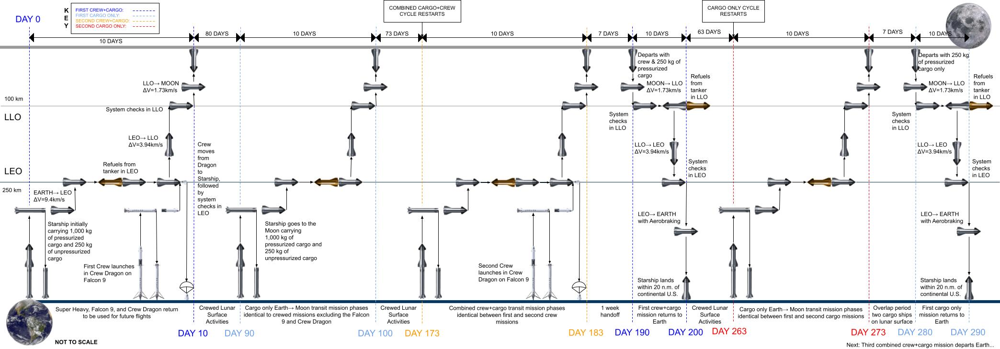

HOME | ENGINEERING PROJECTS | RESUME | CONTACT
Lunar Base Design
HOME | ENGINEERING PROJECTS | RESUME | CONTACT
Lunar Base Design
Project Description:
This lunar base design is the final project associated with the course ASTE 524: Human Spaceflight, taught at USC by former NASA astronaut Dr. Garret Reisman. The base design accommodates the cislunar transportation system concept of operations that is graphically shown below.

The report below details the design of a moon base, named "Jamestown Base", which is located near the lunar south pole.